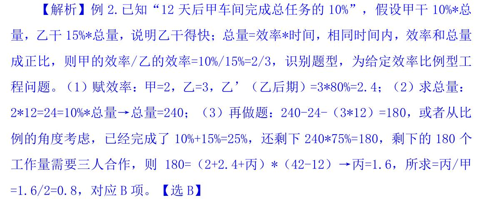

2. 数量关系
倍数特性法
口诀
（常用于 3、4、8、9）：4 和 8 考查不多。
3/9 看各数（个位+十位+百位+千位+万位+……）加和能否被 3/9 整除，
4 看数字末两位能否被 4 整除
8 看数字末三位能否被 8 整除
拆分
没口诀，常用于 7、11、13
一个数=接近且明显能被整除±小数字，看小数字
e.g. 427，427=420+7，420 和 7 都是 7 的倍数，则 427 是 7 的倍数
因式分解
复杂倍数，常用于 6、12、18 等
因式分解成两个互质的数，同时满足能被这两个数整除
12 拆分为 3*4，一个数如果既是 3 的倍数，又是 4 的倍数，则为 12 的倍数。
因式分解的两个数必须互质，3 和 4 之间除了 1 之外没有其他约数，2 和 6 除了 1 之外还可以约去 2
18 应拆分为 2*9，不能拆分为 3*6
例题
注解
已知设备数量为 24 套，故总价一定为 24 的倍数，
考虑因式分解，24 拆分为 3*8，必须知道各个数位上的数字之和才可以判断 3 的倍数，故从 8 的倍数入手，
8 的倍数看末三位，末三位能被 8 整除，则 79△能被 8 整除。
设 79△=800-x，减去的 x 必须为 8 的倍数，则只能为 8，故 79△为 792。
借助 3 的倍数验证首位，后四位加和为 5+7+9+2=23，23+☆应为 3 的倍数，C 项当选。【选 C】
重要
1.做题逻辑：买 24 套→总价为 24 的倍数。
2.本题是正常难度，考查的是倍数判定，8 看后三位，可以确定一个未知量，然后再通过 3 进行验证。
3.所有的数都可以拆分，8 的倍数看末三位即可，不需要拆分。
比例型
记：\(\frac{A}{B}=\frac{M}{N}\) （M、N 最简比），则 A 为 M 倍数，B 为 N 倍数，A±B 为 M±N 倍数。
出现比例，求具体数，优先考虑倍数特性，实在不行再用方程。
比例转化的“无脑方法”
谁比谁，就谁除以谁，分母不动，分子：多→加、少→减。
e.g.
A比B多3/7，A/B=（3+7）/7=10/7。可以用赋值做，假设B为7，A比B多3/7，则A为10。
A比B少3/7，A/B=（7-3）/7=4/7。
B比A多3/7，B/A=（7+3）/7=10/7。
M比N少5/8，M/N=（8-5）/8=3/8。
不定方程
尾数特性
识别：ax+by=M，当 a 或 b 尾数是 0 或 5 时，考虑尾数
e.g., 37x+20y=271，x=？（x、y 均为正整数）
奇偶特性
ax+by=M，当 a、b 恰好一奇一偶时，考虑奇偶特性（从偶系数入手）。
e.g., 3x+4y=25，x=？
倍数特性
A+B=C，如果其中两个数都有 N 因子，则另外一个一定有 N 因子。
e.g., 7x+3y=60，y 最大为多少？
不定方程组
必须为整数：比如人数、车的数量。
消元：求谁留谁，消系数小的。
利用数字特性。
不必须为整数：比如时间、金钱、速度。
赋其中一个未知数为 0：尽量赋系数大的，比较好算。
计算出其他未知数。
工程问题
完工时间型
识别：只给了多个（2 个以上）的完工时间。
方法：
赋总量→最好为完工时间的最小公倍数（方便计算）
求效率→效率=总量/时间
做题
同时开始同时结束
方法：
先总体→t 总 = 总量加和/效率加和
再分开→帮谁分析谁
效率比例型
方法：
赋效率→最好为比例数
求总量→总量=效率*时间
做题
e.g.
某企业生产一批产品，计划在 42 天内完成，先由甲、乙车间共同生产，12 天后甲车间完成总任务的 10%，乙车间完成总任务的15%。乙车间因设备整修，此后只能以 80%的效率工作，为按时完成任务，丙车间此时新加入工作，则其产能至少应是甲车间的：

误工追赶
加速期工作量=原本工作量 + 误工期工作量
牛吃草
e.g., 牧场上有一片青草，每天都生长的一样快。这片青草供给 10 头牛吃， 可以吃 24 天，或者供给 17 头牛吃，可以吃 10 天，如果供给 25 头牛吃，可以吃 几天？
行程问题
基本行程
基本公式：S = V * T
等距离平均速度
直线相遇
甲乙两人从 A、B 两地同时出发，相向而行。假设甲的速度为 \(V_1\) 、 乙的速度为 \(V_2\) ，二人行走的时间为 t，则
直线追及
甲乙两人从 A、B 两地同时出发，同向而行。
e.g., 小王和小李从甲地去往相距 15km 的乙地调研。两人同 时出发且速度相同。 15 分钟后，小王发现遗漏了重要文件遂立即原路原速返回， 小李则继续前行；小王取到文件后提速 20%追赶小李，在小李到达乙地时刚好追 上，假设小王取文件的时间忽略不计，问小李的速度为多少 km/h？
解：小王和小李同时从甲地出发去乙地调 研，路程总共 15 千米，两人同时出发且速度相同，假设小王、小李的速度均为 V，小王出发 15 分钟后，发现遗漏了重要文件遂立即原路原速返回，小王出发和原路返回均为 15 分钟，此时小李继续往前走 15 分钟，小李、小王相差 15+15=30 分钟=0.5 小时的路程，即两人之间的距离为 0.5V。已知“小王取到文件后提速 20%追赶小李”，小王提速后速度变为 1.2V，小李速度不变还是 V，为追及过程， 公式：\(S_追及 =V_差 * t\) ，列式：0.5V=（1.2V-V）*t=0.2V*t，解得 t=2.5，小王追上小 李共用了 2.5 小时，小李共走了 0.5+2.5=3 小时，则 \(V_李 =15km/t_李 =15/3=5km/h\)，
环形相遇
甲乙两人在环形跑道上，同时出发，背向而行。
环形追及
甲乙两人在环形跑道上，同时出发，同向而行。例如甲乙在同 一点同向而行，甲跑的比乙快，从后面追上了乙，即套圈，从后面追上一次相当 于多跑了一圈，多跑的距离就是追及路程。
线性多次相遇
同端出发
两端出发
流水行船
e.g., 甲、乙两地分别为一条河流的上、下游，两地相距 360 千米，A 船往返需要 35 小时，其中从甲地到乙地的时间比从乙地到甲地的时间 短 5 小时。B 船在静水中的速度为 12 千米每小时。问其从甲地开往乙地需要多 少小时？
解：
\(t_{甲->乙} = 15, t_{乙->甲} = 20\)
\(v_{顺} = v_{甲->乙} = 360 / 15 = 24, v_{逆} = v_{乙->甲} = 360 / 20 = 18\)
\(v_{水} = (v_{顺} - v_{逆}) / 2 = 3\)
\(v_{顺}^B = 3 + 12 = 15\)
\(t_{甲->乙}^B = 360 / 15 = 24\)
经济利润
利润=售价-成本=赚-亏→列方程常用
利润率=利润/成本→与资料分析中的区分开
售价=成本* (1+利润率) →题干日常表述
总利润=单个利润*数量→涉及到数量
打折：打几折就是按照原价的百分之几十出售
注解
利润 = 售价 - 成本， 售价 = 成本 + 利润
利润率 = 利润 / 成本 = (售价 - 成本) / 成本 = 售价 / 成本 - 1
成本 = 售价 / (1 + 利润率)
基础经济的方法
给具体价格（售价、成本、利润），求具体价格→列方程（相对简单）
设未知数→找等量关系（利润=售价-成本）→列方程、解方程
给比例（折扣、利润率），求比例→赋值法（相对较难）
常赋值成本为 10、100 好算的数。涉及数量，赋值总成本=单个成本（10）*数量（10）
二次函数最值
设提/降价次数为 x
两括号=0，求x
平均数时，x为最值 \((x_1 + x_2) / 2\)， 极值将 x 代回原式
e.g., 某苗木公司准备出售一批苗木，如果每株以 4 元出售， 可卖出 20 万株，若苗木单价每提高 0.4 元，就会少卖 10000 株。问在最佳定价 的情况下，该公司最大收入是多少万元？
解：
列方程
\[(4 + 0.4x)(20 - x)\]
求 x1, x2
x1 = -10, x2 = 20
求x
x = (20 + (-10)) / 2 = 5
求最大值
y = (4 + 0.4 * 5)(20 - 5) = 90
最值问题
最不利构造
识别： 至少……才能保证……
方法： 保证数=最不利数+1
e.g., 一个纸箱中装有 43 本同样大小的教辅资料，其中物理教辅资料 4 本，化学教辅资料 3 本，语数英三种教辅资料各 12 本，那么一次至少拿出多少 本教辅资料，才能保证取的教辅资料中至少有 7 本是同一种教辅资料?
【解析】最不利的情况是物理 不够 4 个全取，化学不够 3 个全取，语、数、英够只给 6 个，保证数=最不利数+ 1=4+3+6+6+6+1=26。
构造数列（和定最值）
【识别】：和一定，求某个主体的最大值、最小值，此消彼长
【方法】：
定位→确定求谁的什么值。
反向→若求最大，其他尽可能小，从最小的开始构造，若求最小，其他尽可能大，从最大的开始构造
重要
注意：看题干是否有“各不相同”，没说，可以默认相同
求解→若结果不为整数，反向取整 (最大为 7.2，向下取整取 7；最小为 7.2，向上取整取 8)
多集合反向构造
【识别】：都（同时、共同）……至少……
【常规方法】：反向（“喜欢”的反向是“不喜欢”）→求和→作差
【无脑公式】：“全部”就是全部的数量、总体
排列组合
排列
组合
特定题型
选项小（枚举法）
要相邻（捆绑法）
注解
先捆：把相邻的捆绑起来，考虑内部顺序。
后排：把捆后的“胖子”与其他排列。
不相邻（插空法）
注解
先将可以相邻的进行排列，排列后形成若干个空位。
再将不相邻的插入到形成的空位中去。
错位排列（结论）
环形排列
归一法
m个元素中的n个元素相对位置固定，把m个元素进行全排列，n个元素的相对位置有 \(A_n^n\) 种， 排列数有 \(\frac{A^m_m}{A^n_n}\) 种
概率
【问题】：两个主体，相同目标，求P
【解答】：先任意固定一个，然后求另一个满足的概率P即可
【例题】：如 A、B、C、D 四个选项，甲和乙蒙同一个答案的概率为多少？
【解答】：
任意固定一个，甲先选，假设选 B 项。
乙选择的时候，有 4 种选择，其中有 1 个 B 项和甲相同，概率为 1/4。
容斥原理
两集合
三集合标准型（分别给出两两交集）
三集合非标准型（统一给出满足两者）
如何区分标准与非标
标准：
【公式】总数=A+B+C-A∩B-A∩C-B∩C+A∩B∩C+都不
【识别】分别给出两两交集（既……又），题干/问题中分别给出两两交集（既 A 又 B、既 B 又 C、既 A 又 C）
【例子】28 人喜欢泰山，30 人喜欢华山，42 人喜欢黄山，8 人既喜欢黄山又喜欢华山，10 人既喜欢泰山又喜欢黄山，5 人既喜欢华山又喜欢泰山，3 人喜欢这三个景点，则不喜欢这三个景点中任何一个的有多少人？
非标准：
【公式】总数=A+B+C-满足两项-2*满足三项+都不
【识别】统一给出满足两者（参加两项、喜欢两种），题干/问题中统一给出满足两种（只满足两种）
【例子】…参加合唱活动的有 189 人，参加象棋活动的有 152 人，参加羽毛球活动的有 135 人，参加两种活动的有 130 人，参加三种活动的有 69 人，不参加任何一种活动的有 44 人。该单位的职工人数为多少？
方法选择
公式法：题目中所给、所求都是公式中的一部分。
画图法：出现 只 A 。公式中没有，考虑画图。
求和公式
等差数列的中项求和公式：
重要
当 n 为奇数时， \(S_n = 数列中间项 \times n\) ， 其中数列中间项是 \(\frac{1 + n}{2}\)